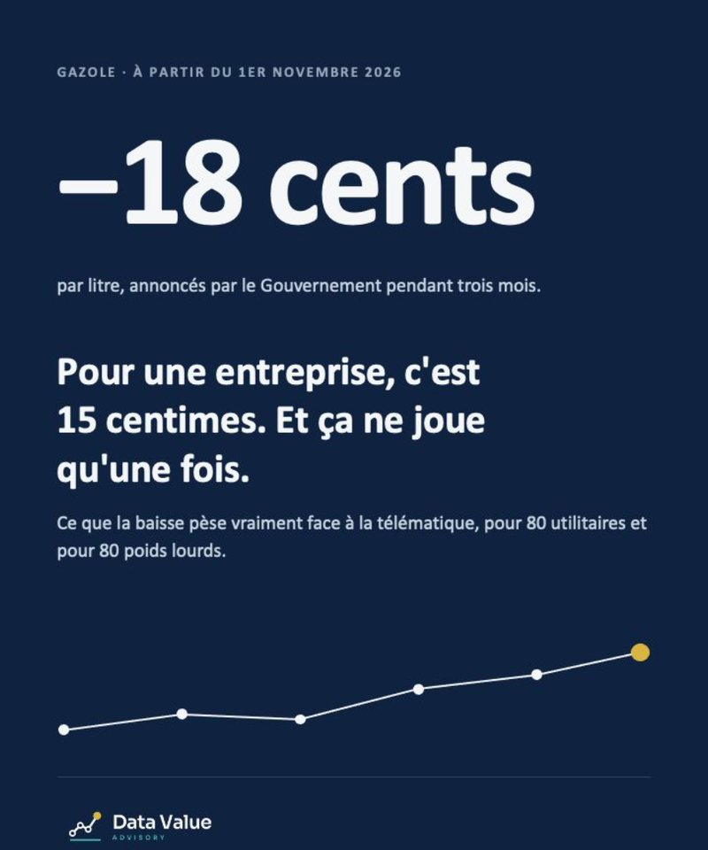

Le Gouvernement a annoncé une baisse du gazole pouvant atteindre 18 centimes par litre pendant trois mois, à partir du 1er novembre 2026. C'est une bonne nouvelle pour les flottes. Mais un prix à la pompe se subit, alors qu'une consommation se pilote, et c'est sur ce second terrain que se juge la rentabilité d'un projet télématique.

Le prix réel du litre pour une entreprise
Les 18 centimes annoncés sont TTC. Une entreprise récupère la TVA : il en reste 15. Le prix de référence n'est d'ailleurs pas le même selon le type de véhicule.
| Prix du litre de gazole | Montant |
|---|---|
| À la pompe, TTC (moyenne nationale, semaine du 9 octobre 2026) | 2,33 € |
| Utilitaires de moins de 3,5 t, HT (TVA récupérée) | 1,94 € |
| Poids lourds de 7,5 t et plus, net (TVA récupérée et 15,6 c d'accise remboursés) | 1,79 € |
Les flottes équipées d'une cuve disposent d'un avantage supplémentaire : le gazole livré en vrac a coûté en moyenne environ 5 centimes de moins par litre que la pompe sur la période 2023-2025.
Cas n°1 : 80 utilitaires, un équilibre serré
Prenons une flotte de 80 utilitaires parcourant 25 000 km par an à 8,5 L/100 km. Elle consomme 170 000 litres de gazole, soit environ 330 000 € HT par an.
| 80 utilitaires | Montant |
|---|---|
| Baisse de l'État, sur trois mois | 6 400 €, une fois |
| Gains apportés par la télématique (−4 à −8 % de consommation) | 13 000 à 26 000 € par an |
| Coût de la télématique (80 boîtiers × 20 € par mois) | 19 200 € par an |
| Point de bascule | −6 % de consommation |
Pour que le carburant paie seul les boîtiers, il faut réduire la consommation d'environ 6 %. C'est atteignable, pas garanti. Sur une flotte d'utilitaires, le carburant est un inducteur de gains évident, mais il doit souvent être complété par d'autres cas d'usage pour assurer la rentabilité : sinistralité, taux d'utilisation des véhicules (combien dorment sur le parking ?), maintenance, vols, temps administratif.
Cas n°2 : 80 poids lourds, sans discussion
Même nombre de véhicules, autre profil : 80 poids lourds parcourant 60 000 km par an à 30 L/100 km. La flotte consomme 1,44 million de litres, soit environ 2,6 M€ HT de gazole par an.
| 80 poids lourds | Montant |
|---|---|
| Baisse de l'État, sur trois mois | 54 000 €, une fois |
| Gains apportés par la télématique (−4 à −8 % de consommation) | 103 000 à 206 000 € par an |
| Coût de la télématique (80 boîtiers × 20 € par mois) | 19 200 € par an |
| Point de bascule | −0,7 % de consommation |
Moins d'un pour cent d'économie de carburant suffit à payer les boîtiers. Sur une flotte de poids lourds, le carburant seul justifie l'outil, et tous les autres leviers viennent en bonus.
À retenir
- La baisse de l'État joue une fois. La télématique joue chaque année.
- Poids lourds : le carburant seul paie l'outil. Utilitaires : le carburant est un levier évident, à compléter par d'autres cas d'usage pour trouver la rentabilité.
- Un retour sur investissement se prouve : mesure avant déploiement, période de référence, suivi trimestriel par levier.
Un ROI se prouve, il ne se promet pas
Le piège classique consiste à attribuer à l'outil ce qui vient du prix à la pompe, de la météo ou d'un changement de tournées. Pour éviter ce biais, trois règles simples :
- Raisonner en litres aux 100 km, et non en euros : l'effet prix et l'effet consommation doivent être séparés.
- Fixer une période de référence avant le déploiement, sur un périmètre comparable de véhicules et de tournées.
- Suivre chaque levier chaque trimestre : ralenti moteur, éco-conduite, contrôle des cartes carburant. Un levier qui ne bouge pas doit être retravaillé ou abandonné.
C'est cette discipline qui permet de défendre un projet devant une direction financière, puis de démontrer qu'il a tenu ses promesses.
Cas types construits sur des hypothèses d'illustration, sans lien avec un client. Sources : DGEC (relevé hebdomadaire des prix du 9 octobre 2026), DGFiP, CNR (prix moyens cuve 2023-2025).